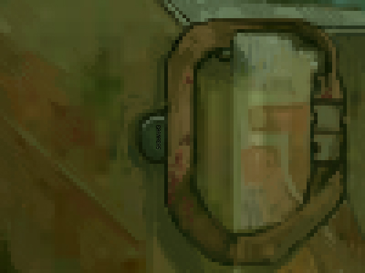

but I think you did too.
thatboynextdoorpullsmytailsometimesbutitsokbecauseiloveyouiloveyouiloveyouiloveyouiloveyouiloveyouiloveyouiloveyouiloveyouiloveyouiloveyouiloveyouiloveyouiloveyouiloveyouiloveyou
